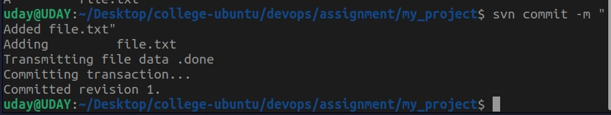
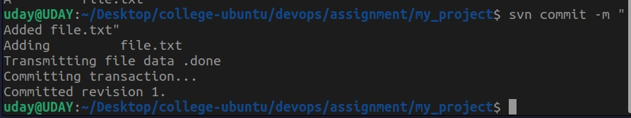

Installation
To install Apache Subversion, run the following commands:
sudo apt update
sudo apt install subversionFor installation using Nix, use:
nix-shell -p subversion subversionClient tkrev
Creating a Local Repository
1. Create a directory for your repository:
mkdir ~/svn_repo2. Initialize the repository:
svnadmin create ~/svn_repo/my_project
Basic SVN Commands
Checkout a Repository
svn checkout file:///home/uday/svn_repo/my_projectAdd Files to the Repository
svn add file.txt
svn commit -m "Added file.txt"Update Your Copy
svn updateDelete Files
svn delete file.txt
svn commit -m "Deleted file.txt"
 



Access Control
Edit the svnserve.conf file to enable authentication:
anon-access = read
auth-access = write
password-db = passwd